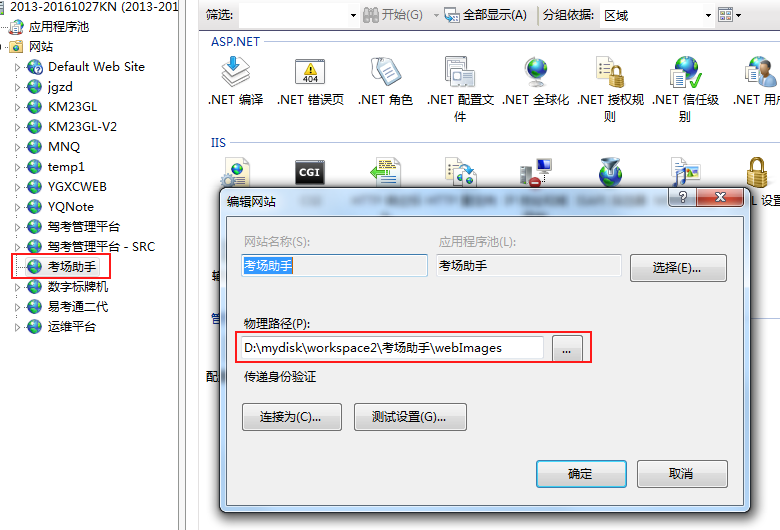

以网络路径引用本地图片
uniapp中的要求，图片如果大于40KB,需开发者自己将其转换为base64格式使用或将其挪到服务器上，从网络地址引用,下面演示了如何以网络路径引用本地图片。
通过IIS配置网络路径

引用
.test{
background:url(http://localhost:1111/bg2.png) no-repeat center top;
}
uniapp中的要求，图片如果大于40KB,需开发者自己将其转换为base64格式使用或将其挪到服务器上，从网络地址引用,下面演示了如何以网络路径引用本地图片。
.test{
background:url(http://localhost:1111/bg2.png) no-repeat center top;
}